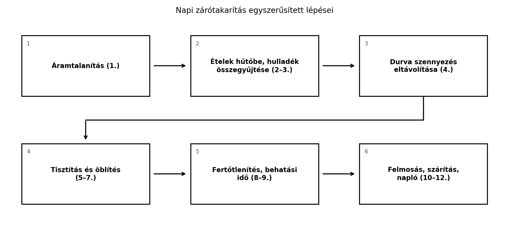

Vendéglátó konyhában a takarítás, a mosogatás és a hulladékkezelés nem járulékos feladat, hanem a napi munka része. Ha ezeket hanyagul végezzük, az étel nemcsak élvezhetetlen lesz, hanem meg is betegítheti a vendéget. Ráadásul a hatósági ellenőrzés is ezeket a területeket nézi meg először. Aki szakácsként dolgozik, annak tudnia kell, hogyan készítsen takarítási tervet, hogyan mosogasson el kézzel és géppel, és hogyan kezelje a hulladékot úgy, hogy a konyha higiénikus, jogszerű és környezettudatos legyen.
Este tíz óra van. A melegkonyhán befejeződött a vacsora. A munkalapon zsemlemorzsa, a gáztűzhely körül zsírfröccsenés, a hidegkonyhai pulton paradicsomlé, a mosogatónál halmozottan állnak a szennyes edények, a kukában hal- és csirkevágási maradék. Ha ez így marad reggelig, a konyha rovarokat, rágcsálókat, bűzt és keresztszennyezést kockáztat. A takarítási terv pontosan megmondja, mit, mikor, mivel és ki takarít. A mosogatási rend pedig garantálja, hogy a tiszta tányérról nem kerül újra szennyezés az ételbe.
Definíció. A tisztítás a látható szennyeződések – ételmaradék, zsír, por, vízkő – eltávolítása vízzel, tisztítószerrel és mechanikai munkával. A fertőtlenítés a még megmaradt kórokozó baktériumok, vírusok, gombák számának biztonságos szintre csökkentése fertőtlenítőszerrel vagy magas hőmérséklettel.
Szabály. Először mindig tisztítunk, azután fertőtlenítünk. Ha a felületen zsír vagy ételmaradék van, a fertőtlenítőszer nem tud hatni, mert a szennyeződés elzárja a baktériumokat. A fertőtlenítés nem helyettesíti a tisztítást.
Példa. A szeletelőgép pengéjét előbb takarítsd le ételmaradék-mentesre, majd fertőtlenítsd. Ha csak fertőtlenítőszert fújsz rá, a késszerkezet réseiben maradt húslé baktériumai túlélhetik.
Szabály. Tisztítószerből csak a gyártói utasítás szerint adagolj. A több nem jelent jobb tisztítást. A maradék vegyszer az ételbe kerülhet, a habos felületet nehéz öblíteni, és a szer irritálhat. A túl kevés szer viszont nem oldja a zsírt.
Szabály. A fertőtlenítőszernél fontos a koncentráció, a hőmérséklet és a behatási idő. A higiéniai szakmában alkalmazott oldatokat a gyártó adatlapja és az üzem takarítási terve alapján készítjük el. Tanulási érték: például egyes klórtartalmú felületfertőtlenítőknél 200–1000 ppm szabadklór-szintet és 5–15 perc behatási időt használnak, de a pontos érték mindig a szer engedélyokiratától és a felület típusától függ (ellenőrizendő: gyártói adatlap, NÉBIH-útmutató, takarítási terv).
Jogszabály. A 852/2004/EK rendelet szerint az élelmiszer-vállalkozónak biztosítania kell a helyiségek, berendezések és eszközök megfelelő tisztítását és fertőtlenítését; a tisztítószereket elkülönítve, az élelmiszerektől távol kell tárolni (ellenőrizendő: a rendelet hatályos szövege).
Definíció. A takarítási és fertőtlenítési terv egy olyan dokumentum, amely felsorolja, hogy a konyhában mely felületeket, eszközöket, helyiségeket, milyen gyakran, milyen szerrel, milyen módszerrel, ki és hogyan takarít, és ezt hogyan ellenőrzik.
Jogszabály. A HACCP-alapú élelmiszer-biztonsági rendszer részeként a takarítási programot írásban kell rögzíteni; hiánya súlyos szabálytalanság (ellenőrizendő: NÉBIH-útmutató).
A terv részei:
Eljárás: napi zárótakarítás a melegkonyhában

Kritikus pont. A takarítás során a tisztítószer és a fertőtlenítőszer kémiai veszély, ha ételbe kerül. Ezért: mindig az engedélyezett, élelmiszeriparban használható szert válaszd; pontosan hígítsd; alaposan öblítsd; a vegyszereket zárt, címkézett, az élelmiszertől elkülönített szekrényben tárold. Ha ételbe vegyszer kerülhetett, az étel nem adható ki.
Kritikus pont. A nedves felület mikrobiológiai veszélyt jelent. A baktériumok szaporodásához víz is kell. Ezért a felületeket, edényeket, gépeket használat előtt és zárótakarításkor is szárítsd meg, vagy hagyd teljesen megszáradni.
A konyhai mosogatásnak két területe van: fehér mosogatás és fekete mosogatás. A kettőt mindig el kell választani.
Definíció. A fehér mosogatás a vendég elé kerülő edények, poharak, evőeszközök, tányérok mosogatása. A fekete mosogatás az üstök, lábosok, tepszik, szeletelőgépek alkatrészei, szakácskések és más konyhai munkaeszközök mosogatása.
Szabály. A fehér és fekete mosogatásnak külön medencéje, külön szivacsa, külön kendője legyen. A szennyes edény soha ne érintkezzen a tiszta edénnyel. A fekete mosogató vize zsíros, erősen szennyezett; ha ugyanabban a vízben mosogatsz poharat, abból zsíros, bűzös pohár és keresztszennyezés lesz.
Eljárás: kézi mosogatás lépései
Figyelem. 60 °C feletti vízbe kézzel ne nyúlj; mosogatókosarat és hőálló kesztyűt használj, mert forrázásveszélyes (ellenőrizendő: üzemi munkavédelmi utasítás).
Az alábbi ábra a kézi mosogató munkaállomás elrendezését mutatja. Az edény balról jobbra halad: a szennyes lerakóról (1) a kaparáson (2) és az előöblítésen (3) át a mosómedencébe (4), majd – a mosogatószer leöblítése után – a fertőtlenítő/öblítő medencébe (5), onnan a csepegtetőre (6) és a tiszta, fedett polcra (7) – visszafelé soha. Alul a fekete és a fehér mosogatás elkülönítése látható.
Az ábrán szándékosan nincs hőmérséklet: a mosó- és öblítővíz hőmérsékletét, a fertőtlenítőszer koncentrációját és behatási idejét a szer gyártói utasítása és a HACCP-terv adja (ellenőrizendő). Forró vízbe kézzel ne nyúlj: az 5. medencénél mosogatókosarat és hőálló védőkesztyűt használj. A HTML-kiadásban a ◀ ▶ gombokkal állomásról állomásra követheted az edény útját.
Figyelem. A kézi mosogatásnál a mosogatórongy maga is baktériumforrás lehet. Használj egyszer használatos papírtörlőt, vagy naponta többször cserélt, mosott, fertőtlenített textilkendőt. A kendőket ne hagyd a mosogatóban állni.
A gépi mosogatás biztonságosabb, mert magas hőmérsékletű öblítéssel fertőtlenít. A gépet a gyártó utasítása szerint kell üzemeltetni.
Szabály. A mosogatógép főmosási és öblítési hőmérsékletét rendszeresen ellenőrizd. Tanulási érték: a vendéglátóipari mosogatógépek jellemző öblítési hőmérséklete 80–90 °C, a főmosás 55–65 °C; a pontos érték a gép típusától és a HACCP-tervtől függ (ellenőrizendő: gyártói útmutató, helyi üzemeltetési utasítás). Ha az öblítési hőmérséklet alacsonyabb, a gép nem fertőtlenít megbízhatóan.
Eljárás: gépi mosogatás ellenőrzési pontjai
A 2. lépés szabálya azért fontos, mert a gép vize alulról, a forgó szórókarból érkezik. Az alábbi ábra bal oldalán a víz minden felületet elér; a jobb oldalon az egymásba rakott tányérok, a felfelé fordított pohár és az egymásba csúszott kanalak „árnyékolnak” – a sraffozott felületeket a víz nem éri el, ott a gép nem tisztít és nem fertőtlenít.
A ciklus végi ellenőrzésnél (5. lépés) a hibás bepakolás jele a foltos, zsíros felület az edények belsején. A HTML-kiadásban a helyes és a hibás nézet között válthatsz.
Kritikus pont. A mosogatógép mikrobiológiai kritikus pont, ha nem éri el a beállított hőmérsékletet, mert a csírák túlélhetnek. Figyeld a gép hőmérőjét vagy a digitális kijelzőt; ha hibás, a gépet le kell állítani, és kézi fertőtlenítést kell végezni vagy másik gépet használni. A helyesbítő tevékenységet és az ellenőrzést írásban rögzítsd.
Definíció. A DDD rövidítés a dezinfekció (fertőtlenítés), a dezinszekció (rovarirtás) és a deratizáció (rágcsálóirtás) szavakat takarja. Ebből a kártevők elleni védekezés a dezinszekció és a deratizáció; a fertőtlenítést e fejezet elején tárgyaltuk. A vendéglátó üzemben a kártevőirtás szakmai feladat.
Szabály. A kártevők elleni védekezés nemcsak méregkihelyezésből áll. A legfontosabb a megelőzés: a konyhában ne legyen búvóhely, szaporodási hely, víz és táplálék a kártevők számára. A bejáratok legyenek zárhatók, a nyílászárók rovarhálóval védettek, a falakon réseket tömítsd, az áru átvételekor ellenőrizd a csomagolást, a raklapokat.
Szabály. Rovar- vagy rágcsálóirtó szert csak szakképzett, engedéllyel rendelkező vállalkozó alkalmazzon, élelmiszertől elkülönítve, a vonatkozó előírások szerint (ellenőrizendő: 2000. évi XXV. törvény kémiai biztonság, NÉBIH-útmutató). A kihelyezett rágcsálóirtó dobozok legyenek zártak, feliratozottak, és ne kerülhessenek élelmiszer közelébe.
Példa. A konyhában észleltél egy csótányt. Nem elég lecsapni, mert ahol egyet látsz, ott több is lehet. Azonnal jelentsd a vezetőnek, zárd le a területet, ne készíts ott ételt, és hívj kártevőirtót. A rovarirtás után alaposan takarítsd le a felületeket, mielőtt újra termelnél.
Higiénia. A kártevőirtás során használt vegyszerek kémiai veszélyt jelentenek. Az irtás után az összes élelmiszerrel érintkező felületet takarítani és fertőtleníteni kell. A kihelyezett csapdákat, ragasztólapokat rendszeresen ellenőrizd, és a fogási eredményt dokumentáld.
A konyhában többféle hulladék keletkezik: élelmiszer-hulladék (zöldség- és húshulladék), csomagolási hulladék (karton, műanyag, üveg), használt sütőolaj, veszélyes hulladék (izzók, elemek, sérült elektronika), valamint kommunális hulladék.
Szabály. A szerves hulladékot zárt, mosható, jelölt edényben gyűjtsd, és gyakran ürítsd. A konyhai hulladéktároló edényt a konyhától elkülönített, hűtött vagy jól szellőzött helyiségben tartsd. A hulladék soha ne érintkezzen élelmiszerrel, eszközzel vagy tiszta felülettel.
Szabály. Használt sütőolajat tilos a csatornába önteni, tilos a kommunális hulladékba tenni. A használt étolajat, zsiradékot engedéllyel rendelkező begyűjtő cégnek kell leadni, lezárt, jelölt tartályban (ellenőrizendő: helyi önkormányzati hulladékrendelet, begyűjtői szerződés). A használt olajat a konyhában hűvös, zárt, fénytől védett tárolóban gyűjtsd, ne meleg helyen.
Szabály. Veszélyes hulladékot (fénycső, elem, akkumulátor, sérült hűtőgép, vegyszeres flakon) csak az arra szakosodott átvevőhelyen vagy gyűjtőponton adj le. A veszélyes hulladékot soha ne keverd a normál konyhai hulladékba.
Szabály. Szelektív gyűjtés: a papír, műanyag, fém, üveg, zöldhulladék frakciót a helyi előírások szerint külön gyűjtsd. A konyhai csomagolás sok karton, fólia, konzervdoboz. A szelektív gyűjtés csökkenti a kommunális hulladék mennyiségét és a környezetterhelést (ellenőrizendő: helyi hulladékgazdálkodási rendelet).
Definíció. Élelmiszer-hulladék az a konyhai maradék, amely emberi fogyasztásra nem kerül, például zöldséghéj, tojáshéj, csont, vágási nyesedék. Ezt el kell különíteni a fogyasztható élelmiszertől. Különösen fontos, hogy a hús-, hal- és tojáshulladék ne érintkezzen zöldséggel vagy előkészített élelmiszerrel.
Jogszabály. Az állati melléktermékekre vonatkozó uniós és hazai szabályok szerint a konyhai állati hulladékot engedéllyel rendelkező szállítónak kell átadni, a dokumentációt megőrizve (ellenőrizendő: állati hulladékra vonatkozó hatályos előírás).
A konyhai takarításhoz gyakran kell tömény szerből hígított oldatot készíteni. A számításhoz ugyanaz a keverési elv kell, mint a főzésnél.
Számítás. A takarítási terv szerint 10 liter felületfertőtlenítő oldatot kell készíteni. A szer 2% koncentrációjú oldatot igényel. Hány liter tömény fertőtlenítőszert mérj ki, és mennyi vizet adj hozzá?
Számítás. Egy konyha naponta 120 vendégadag ételt készít. Az élelmiszer-hulladék átlagosan 40 gramm/adag. Mennyi a heti élelmiszer-hulladék, ha heti 6 munkanap van? Hány literes gyűjtőedény kell egynapi tárolásra, ha a hulladék sűrűsége nagyjából ?
Cél: a melegkonyhai zárótakarítás elvégzése és ellenőrzése.
Eszközök és anyagok: tisztítószer, fertőtlenítőszer, szivacs, súrolókefe, felmosó, egyszer használatos papírtörlő, védőkesztyű, védőszemüveg, mosogató- és öblítőszer, mérőedény a hígításhoz, takarítási napló.
Biztonsági korlát. A takarítást tankonyhán vagy oktatói felügyelettel gyakorold; otthon csak a leírt biztonsági feltételekkel. A vegyszereket soha ne keverd, mert mérgező gőzök keletkezhetnek. Viselj védőkesztyűt, szükség szerint védőszemüveget.
Higiéniai előkészület: az élelmiszereket előbb takard le és tedd a hűtőbe. A vegyszereket csak az erre felcímkézett, élelmiszertől távoli szekrényből vedd elő.
Számozott lépések:
Ellenőrzési pontok – mit kell látni/mérni: a felület nem zsíros, nem ragad, nincs ételmaradék; a padló nem csúszik; a kuka fedele zár; a vegyszerflakonok lezárva, címkézve; a napló kitöltve.
Dokumentálás: A takarítási naplóban rögzítsd a feltüntetett adatokat. Ha eltérést tapasztalsz (pl. sérült csempe, látható penész), jelentsd a vezetőnek.
Hiba: A szakács csak forró vízzel „leöblíti” a
zsíros munkalapot, nem használ tisztítószert.
Ok: Azt hiszi, a forró víz elég. Valójában a zsír nem
oldódik jól vízben; a baktériumok a zsírréteg alatt túlélnek.
Helyes gyakorlat: Zsíroldó tisztítószeres, mechanikus
súrolást alkalmazz, majd öblíts és fertőtleníts.
Hiba: A fertőtlenítőszert rögtön letörlik, nem
várják ki a behatási időt.
Ok: Sietnek, nem ismerik a gyártói előírást. A
fertőtlenítés ilyenkor hatástalan lehet.
Helyes gyakorlat: A szer adatlapja szerinti ideig hagyd
hatni, stopperrel ellenőrizd.
Hiba: Ugyanazt a szivacsot használják nyers húsos
edényhez és tányérhoz.
Ok: Nem választják szét a fekete és fehér mosogatást. A
nyers húsból baktériumok kerülhetnek a tiszta edényre.
Helyes gyakorlat: Külön színű szivacsok, kendők és
medencék, a személyzetet ki kell oktatni.
Hiba: A használt sütőolajat a lefolyóba öntik.
Ok: Kényelmes, de a csatornában dugulást, bűzt és
környezetszennyezést okoz, ráadásul szabálytalan.
Helyes gyakorlat: Zárd le olajbegyűjtő tartályban, és
szerződött cégnek add át, a bizonylatot őrizd.
Egy kis étterem konyháján a vendég panaszkodott, hogy a pohár mosogatószer-szagú, és a tányér zsíros. Az üzletvezető ellenőrizte a mosogatógépet: a gép öblítőszer-adagolója eltömődött, az öblítési hőmérséklet pedig csak 60 °C volt. A szakács nem nézte a hőmérsékletet, a karbantartást elhalasztották. A hibás edényeket kivonták, a gépet szervizeltették, és bevezették a napi hőmérséklet-ellenőrzési naplót. A tanulság: a gépi mosogatás akkor biztonságos, ha a hőfokot folyamatosan ellenőrzik, és a karbantartást nem halogatják.
1. feladat (A) Nevezd meg a takarítási terv három
kötelező elemét, és magyarázd el, miért fontos a behatási idő.
2. feladat (A) Határozd meg, mi a helyes sorrend:
fertőtlenítés – öblítés – tisztítás – szárazra törlés. Írd le az
indoklást.
3. feladat (B) A mosogatógép napi öblítési
hőmérsékleteit feljegyezték: 85, 82, 78, 88, 70, 84 °C. Melyik nap kell
azonnal beavatkozni, és mit kell tenni?
4. feladat (B) Számítsd ki: egy konyha napi 8 kg
szerves hulladékot termel. A hulladék sűrűsége 0,7 kg/l. Hány literes
zárt gyűjtőedény kell, ha a hulladékot naponta kétszer ürítik?
5. feladat (C) Tervezd meg egy kis konyha heti
takarítási tervét: napi, heti és havi feladatokkal, felelőssel és
ellenőrzési pontokkal. Mutasd be, hogyan előzöd meg a kártevőket.
6. feladat (D) A gyakorlati útmutató alapján végezd el
a zárótakarítást a tankonyhában, töltsd ki a naplót, majd elemezd, miért
fontos a fedő a kukán. Készíts rövid hibajegyzéket, ha a felületen mégis
zsírt találsz.
Önellenőrzés – válaszok
1. feladat (A) A takarítási terv három eleme: terület/berendezés, tisztítószer és hígítás, gyakoriság és felelős. A behatási idő azért fontos, mert a fertőtlenítőszernek idő kell, hogy elpusztítsa a baktériumokat; ha hamar letörlik, hatástalan.
2. feladat (A) A helyes sorrend: tisztítás → öblítés → fertőtlenítés → szárazra törlés. Indoklás: a tisztítás eltávolítja a szennyeződést, az öblítés a tisztítószert, a fertőtlenítés a baktériumokat, a szárazra törlés megakadályozza a nedves közegben való újraszaporodást.
3. feladat (B) A 3. nap (78 °C) és az 5. nap (70 °C) is a 80 °C-os tanulási határ alatt van (ellenőrizendő: 80–90 °C). A 78 °C-nál is helyesbítő tevékenység kell: a gép ellenőrzése, az aznapi edények újramosása vagy kézi fertőtlenítése, naplózás. A 70 °C-nál azonnal le kell állítani a gépet, az edényeket kézzel kell mosogatni és fertőtleníteni, a gépet javíttatni, és az eseményt a mosogatási naplóba írni.
4. feladat (B) Napi 8 kg, sűrűség 0,7 kg/l, térfogat: . Naponta kétszer ürítenek, tehát egy ürítésre kb. 5,7 l hulladék jut. Legalább 2 darab 10 literes, zárható kuka szükséges: így a térfogat biztonsággal tárolható.
5. feladat (C) A heti takarítási tervnek tartalmaznia kell: napi feladatok (munkalap, főzőfelület, mosogató, kuka zárása), heti feladatok (szellőzőrács, hűtő belső polcai, csempék), havi feladatok (zsírtalanító kitisztítása, raktár rendezés, kártevőcsapdák ellenőrzése). Felelősök: műszakos szakács, takarító, üzletvezető. Ellenőrzési pontok: felületvizsgálat, hőmérsékleti napló, kártevőcsapda-fogási napló. A kártevők megelőzése: rések tömítése, rovarháló, napi szemétürítés, száraz padló, zárt élelmiszertárolás, rendszeres ellenőrzés.
6. feladat (D) A gyakorlat során a napló kitöltése igazolja a takarítás elvégzését. A kuka fedője azért fontos, mert megakadályozza a rovarokat, a bűzt és a keresztszennyezést. Ha a munkalapon zsír marad, a hiba oka lehet: nem megfelelő szert használtak, kimaradt a behatási idő, vagy a szivacs már zsíros. A helyes gyakorlat: erősebb zsíroldó, hosszabb behatási idő, tiszta szivacs, majd öblítés és fertőtlenítés.
A takarítás a látható szennyeződés eltávolítása, a fertőtlenítés a kórokozók számának csökkentése. Mindig tisztítás, öblítés, fertőtlenítés, szárítás a sorrend. A takarítási terv írásban rögzíti a területet, szert, hígítást, gyakoriságot, felelőst, ellenőrzést. A mosogatás fehér és fekete területre oszlik; a kézi mosogatás lépései: maradék eltávolítás, előöblítés, mosás, fertőtlenítés, öblítés, szárítás. A gépi mosogatásnál az öblítési hőmérséklet kritikus pont, jellemzően 80–90 °C, de a helyi HACCP-terv a mérvadó (ellenőrizendő). A kártevőirtás (DDD) a megelőzésen és szakszerű védekezésen alapul. A hulladékot zárva, jelölve kell gyűjteni; a használt sütőolajat tilos csatornába önteni, csak engedélyezett begyűjtőnek adható át; a veszélyes hulladékot elkülönítve kell leadni. A szelektív gyűjtés és a víz-, energia- és vegyszertakarékosság a környezetvédelem része. Továbbvitt eredmény. A takarítási terv, a mosogatási hőfok-ellenőrzés és a hulladékkezelés szabályait a HACCP hét alapelve és a veszélyelemzés alfejezetben használjuk, mert ezek a HACCP-rendszer előfeltételi programjai és dokumentált ellenőrzési pontjai.